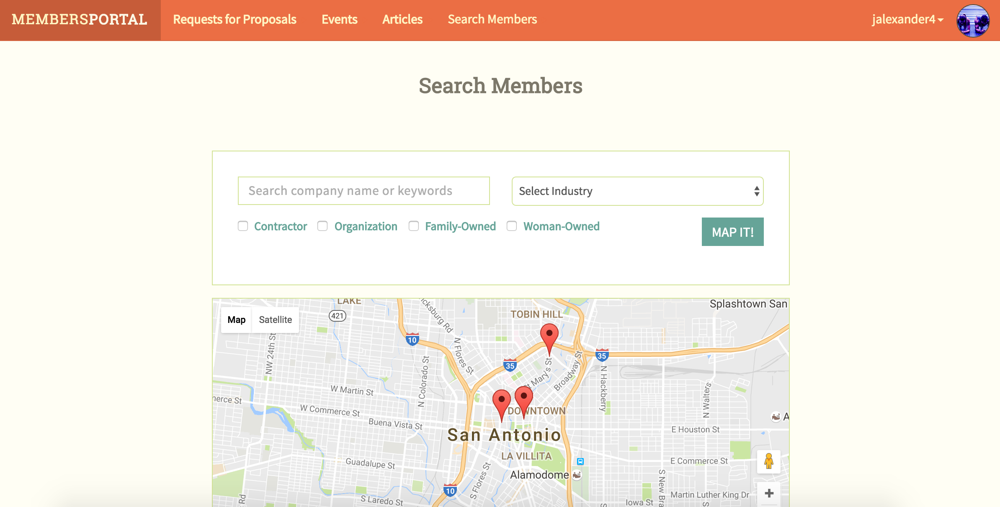
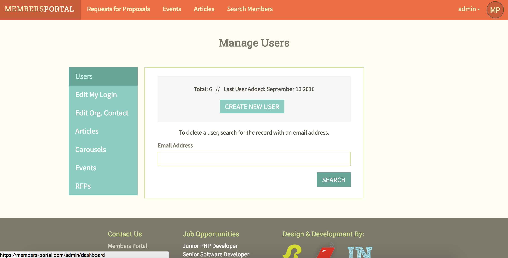

Instead of flashing colors dictating the next pattern, this fun game puts its own twist to the classic Simon Says using Javascript and JQuery to make fake organs pop up. The Operation themed game tracks users' interations and checks if the user's solution is correct in matching the generated pattern. And in it's true fashion, any incorrect answer will sound the alarm, that nerve wrenching buzzer.
The above project tackles several key concerns particularly when it comes to handling Ajax request. Here, I used the combination of the Google Maps and Open Weather API to build this simple application that takes in a location and runs a search for that location's weather forecast.
The application was my first attempt to integrating the two through the use of JavaScript and jQuery. The application also utilizes markers and its dragging feature to update the forecast to that of the location the marker lands.
This is a React with Redux version of the previous Weather Forecast application. Similarly, the application uses the same Google Maps and Open Weather APIs with a search field input that returns that location's 5-day forecase. In this application, however, the forecast is rendered in a series of charts that maps out the forecast's trend. Additionally, among the returned values from the search is a map of that location.
The application also includes Axios which is a Promise based HTTP client for the browser. The Redux-Promise package allowed me to better control the behavior and process of the ajax request coming from the API.
This calculator was an early project that incorporated JavaScript logic to display the calculated values of a user's input. The application uses Twitter Bootstrap for responsiveness.
Using the Laravel MVC framework for the PHP backend, Members Portal resolves a particular issue many chamber of commerce face: providing opportunities for their members to build trusted professional relations to grow local business. This full-stack web application is powered by two types of users, the chamber's admin and their members.
Members Portal was made possible through the use of 10 SQL tables and their information which we were able to exploit through the use of various Eloquent table relationships, like 'belongsToMany'. Members can establish connections with other users, manage their Request for Proposals (RFPs), events, and customize their public profile page.
Although the admin share some of the same capabilities, they have the ability to create users and update their membership based on their status with the chamber. The admin also has full control of all displayed content on the homepage which typically are organization-wide events and RFPs pertaining to the chamber itself.
If you find yourself in The Adventure Zone searching for magical items in the gripping Dungeons and Dragons narrative there is no other place to find what you are looking for than Fantasy Costco. Adapted from a popular podcast amongst D&D fanatics, this eCommerce website was built entirely in vanilla PHP and custom CSS. The challenge for this project was to construct a site that utilizes the tenets of CRUD.
With logical inspiration from Costco Online, my two partners and I created an environment that distinguished administrators and general users upon login tracking their distinct sessions to guide them through their navigations. As would be expected, users are able to view and search the entire inventory of Fantasy Costco either by the Search Bar above or by flicking any of the filtered links that builds custom queries based on the user's interaction. Administrators, on the other hand, can create, update, and delete any item with ease as as view items in clean table upon signing in.
FlyPin is a simple Pinterest clone that allows users to manage an account they create and post articles, pictures, text, and other information they wish to display to the site. Using Auth from Laravel, user's accounts are securely managed through a login form that is required upon entering the site.